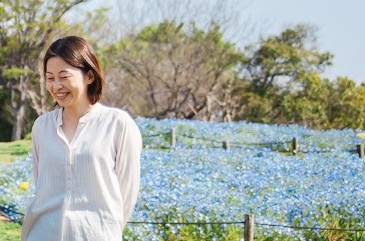

デリケートな情報を、
当事者のこころに届く形に。
私はこれまで、「こどもに関わる仕事」を歩んできました。 児童養護施設の職員として生活に深く寄り添い、その後、児童相談所での5年間は、こどもたちが自らの生い立ちを理解するための「ライフストーリーワークの資料作成」に携わりました。
自分の生い立ちを整理し、一冊の本にまとめていくのは、こども自身です。けれど、生まれたときのことや入所の経緯といった、本人だけでは知り得ない事実は、大人が正しく整理して伝えてあげなければなりません。
時に事実は痛みを伴いますが、嘘はつかず、誠実に。 こどもが年齢や理解力に合わせて事実を受け入れ、納得して前へ進めるように。図や絵も使いながら、一人ひとりの心の状態に合わせた「最適な情報の届け方」を模索し、資料を整える日々を過ごしました。
相手の心の状態に合わせて、言葉を選び、図や絵をどこに置くかを考え抜く。LSWの資料作成で培ったこの「構成力」は、Web制作において私が最も大切にしている強みです。
情報を整えることで生まれる「納得」と「安心感」を、デザインを通じて提供していきます。